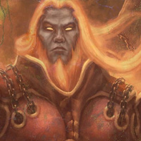

Kharn, The Battlefather
God of the War Domain
Kharn, the Battlefather, is a formidable deity known for his association with war, combat, and martial prowess in the world of Celestia. He is often depicted as a towering figure clad in armor, wielding a mighty weapon and exuding an aura of martial prowess.
Kharn is revered as a god of battle and warfare, and is often invoked by warriors, soldiers, and champions seeking his favor in combat. He is believed to be an ancient and powerful deity, born from the tumultuous clashes of warring armies and battles throughout history. His origins are steeped in myth and legend, and he is often seen as a patron and protector of those who take up arms in the name of honor, glory, and victory.
As the Battlefather, Kharn is believed to possess great strength, courage, and skill in combat. He is often depicted as a fierce and relentless warrior, leading his followers into battle with unwavering determination and valor. He is associated with strategic thinking, tactics, and leadership, and is revered as a deity who grants his followers the strength and skill needed to triumph in battle.
Kharn's followers are often warriors, soldiers, and knights who seek his blessings in their quest for victory on the battlefield. They revere him as a wise and powerful deity, who embodies the virtues of bravery, honor, and martial skill. They may perform rituals and ceremonies to invoke his favor before battle, seeking his guidance and protection in the heat of combat.
Kharn's domain, the battlefield, is believed to be a realm where his power is at its peak. It is said that he watches over the clashes of armies, guiding and inspiring those who fight in his name. His influence is felt in the chaos and carnage of war, and he is often called upon to grant strength and courage to those engaged in battle.
Despite his association with war and combat, Kharn is not seen as an evil or malevolent deity. Rather, he is viewed as a deity who upholds the values of honor, bravery, and victory in battle. He is seen as a force that ensures the natural order of conflict and competition, and his followers believe that he bestows his blessings on those who fight with honor and valor.
Legends and tales abound about the feats of Kharn, with stories of his mighty deeds in battle passed down through generations. Some believe that he walks among mortals in times of great conflict, guiding and inspiring those who fight in his name. Others see him as a distant and awe-inspiring figure, whose power and presence are felt in the tumultuous clashes of armies and the struggles of warriors.
Kharn's worship is often accompanied by rituals and ceremonies that exalt his virtues of courage, honor, and martial prowess. Offerings may be made to him before battle, and prayers and invocations may be offered to seek his favor and protection. Many warriors and soldiers look to him for inspiration and strength in times of war, seeing him as a guiding figure who watches over them on the battlefield.
Overall, Kharn, the Battlefather, is a revered and powerful deity associated with war, combat, and martial skill in the world of Celestia. He is a deity of strength, courage, and honor, whose presence is felt in the struggles and conflicts of mortal realms, and whose blessings are sought by those who seek victory in battle.